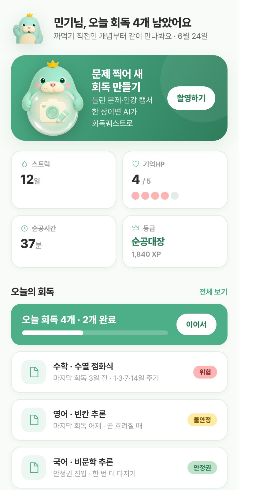
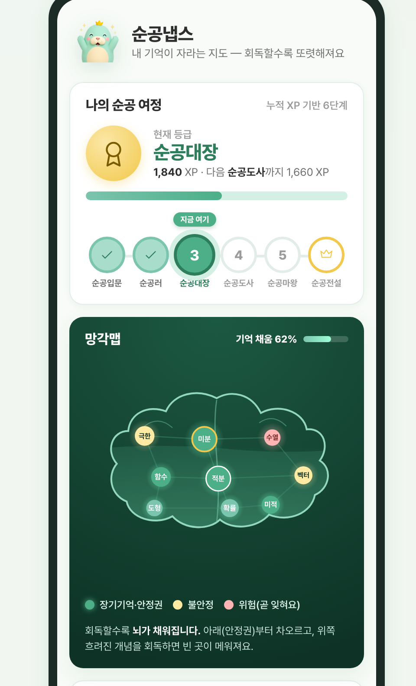
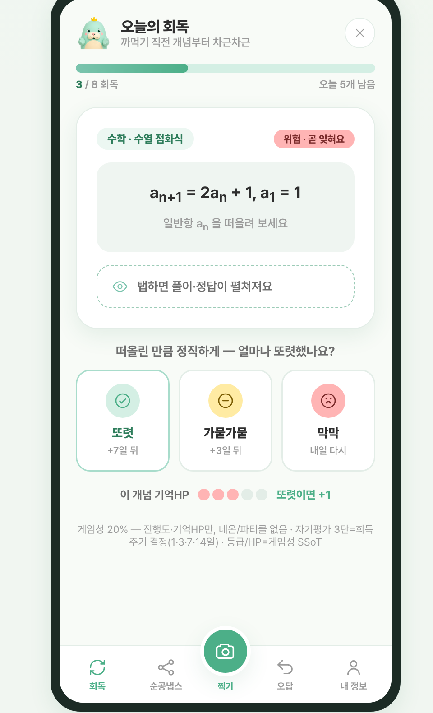
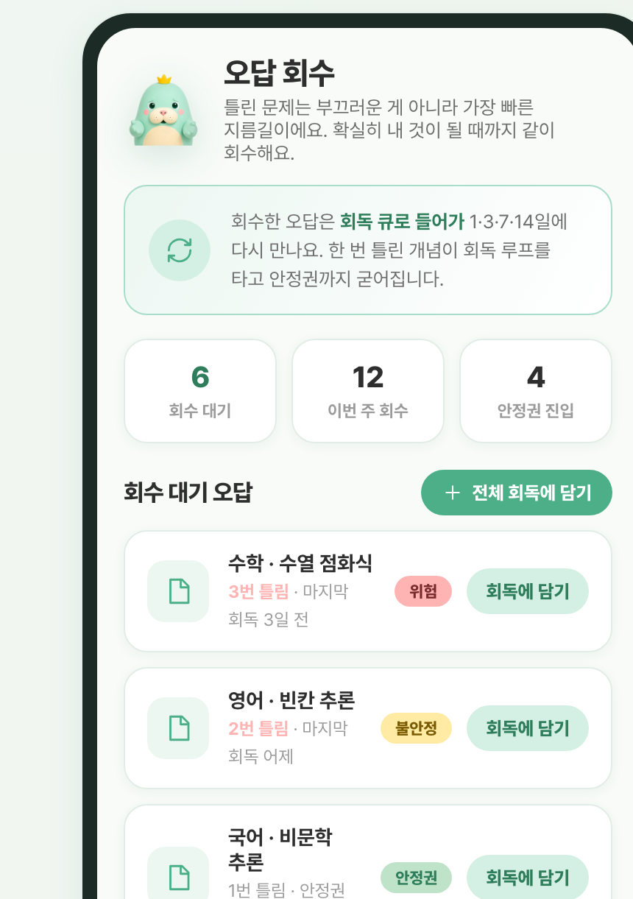
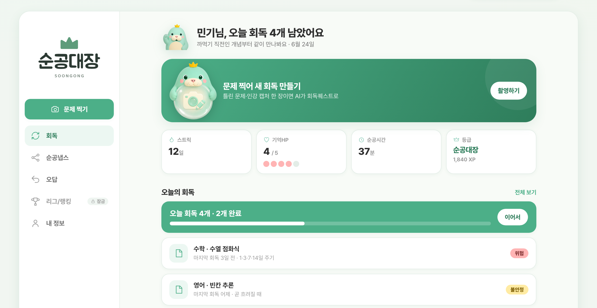

회독 리텐션 앱

지킨다 — 까먹지 않게.

에빙하우스 망각곡선상 학습 후 복습이 없으면 기억은 하루~며칠 내 급격히 소실된다. 한 번 푼 문제도 회독 없이는 시험장에서 사라진다.
콴다 등 AI 풀이는 "막힘"(지금 안 풀리는 문제)을 푼다. 하지만 "까먹음"(한 번 풀었으나 잊은 것)은 아무도 관리하지 않는다.
같은 개념을 반복 재학습하느라 순공시간이 샌다. 학생은 "공부한 만큼 남지 않는다"고 느낀다.
카메라로 찍어 공급
학습객체로 구조화
스케줄 자동 배치
= 까먹음 제거
독학재수관(독학재수 전문 학원)이 빠르게 늘고 있다 — 수만휘 가맹점·수능선배 등 프랜차이즈 확산. 혼자 공부하지만 관리·리텐션이 필요한 학생군이 커지는 중이다.
인강·문제은행 등 교육 콘텐츠 접근성이 평준화됐다. 누구나 같은 자료를 본다.
손글씨·수식 인식 OCR과 AI가 실사용 수준에 도달 — "내 문제 캡처"가 비로소 가능해졌다.







- 학생이 실제로 푼 자기 문제를 카메라로 캡처
- OCR·AI가 학습객체로 구조화 → 회독 큐 자동 생성
- 1·3·7·14일 회독 스케줄에 자동 배치
- 또렷 — 충분히 기억 → 복습 간격 +7일
- 가물가물 — 흐릿함 → +3일
- 막막 — 거의 잊음 → 내일 다시
회독 진척을 뇌가 채워지는 형태로 시각화. 무엇을 언제 다시 볼지, 까먹음 위험을 한눈에.
위험도 기반으로 틀린 문제를 골라 회독 큐로 되돌린다. 약한 기억부터 우선 회수.
| 지표 | 값 | 비고 | 신뢰도 |
|---|---|---|---|
| 국내 사교육비 총액 (2022) | 약 26조 원 | 전체 시장 외연 | 검증 |
| 사교육 참여율 | 78.3% | 도달 가능 모집단 | 검증 |
| 학생 1인 월평균 지출 | 41만 원 | 지불 의향 지표 | 검증 |
| 국내 에듀테크 시장 | 7.3조('21) → 9.98조('25) | CAGR 8.5% | 추정 |
| 독학재수관 세그먼트 | 확대 중 (수만휘 가맹·수능선배 등) | 핵심 진입 세그먼트 — 혼자 공부하지만 관리·리텐션이 필요한 학생군 | 가정 |
· 남의 콘텐츠
까먹음 × 내 문제 사분면은 비어 있다. 순공대장이 이 카테고리를 정의한다.
OCR·AI로 손글씨·수식이 섞인 내 문제를 학습객체로 구조화. 캡처 정확도가 진입 장벽.
망각 위험을 추정해 복습 타이밍을 스케줄링. 리텐션을 만드는 핵심 엔진.
쓸수록 데이터가 쌓여 인식·스케줄이 정밀해진다 → 더 강해진다. 후발주자가 따라잡기 어렵다.
- 캡처 체험
- 제한된 회독 횟수
- 핵심 가치 맛보기
- 회독 엔진 풀 사용
- 망각맵·개인화
- 핵심 타깃 가격대
- 무제한 회독
- 다과목·심화
- 고밀도 학습자용
게이팅 축: 회독 엔진 사용 횟수 / 과목 수. 가치를 가장 많이 쓰는 지점에 과금.
단위원가: 약 0.12원/장 가정 — 인식·처리 비용 기준 러프값.
- 게임회사 출신 — 유저 리텐션(이탈 방지·재방문 설계)이 본업이었다.
- 독학재수관 투자·운영 — 교육 현장을 사업자로 직접 겪었다.
- 1년간 학생을 직접 관찰 — "풀어도 까먹는다"를 현장에서 발견했다(책상 위 가설이 아니다).
리텐션 DNA × 교육 현장 경험
- 게임에서 단련한 재방문·이탈방지 설계를 학습에 이식
- "까먹음"이라는 교육의 미해결 문제를 정조준
- 문제 정의가 데이터가 아니라 현장에서 나왔다
이 인사이트 위에 데이터 역량을 쌓아 MOAT 엔진을 완성한다.
- DE(데이터 엔지니어) — 회독 엔진 데이터 파이프라인 · 문제 인식(OCR/AI) 인입 · 스케줄링 인프라
- Data Ops — 데이터 품질·라벨링·운영 · 학습 데이터셋/프로파일링 · 모델 학습·배포 운영(ML 운영)
- 회독 엔진 기초 파이프라인 + 기술적 베이스 구축
- 브랜드 시스템·UX 흐름 초기 완성 — 브랜드 페이지·앱 화면 MVP
- 회독 엔진 고도화 — 문제 인식 정확도 = MOAT
- 서비스 인프라 — 캡처·처리 파이프라인 스케일
- 학생 어드민 — 학습 관리 대시보드
- 학습 프로파일링 — 개인화·플라이휠 가속
- 실앱 배선 · 베타 출시
지키는 시대.
공부한 만큼 남는 학습 — 그것이 우리가 만드는 미래다.